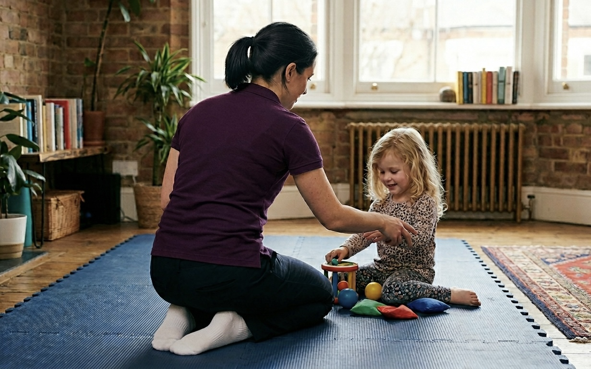

Paediatric Physiotherapy
Specialist physiotherapy for babies, children and young people in South London. Delivering a personal and professional service in the comfort of your home.
How I can help your child
I work with babies, children and teenagers across a wide range of musculoskeletal and developmental conditions.
Approach
With more than 15 years of specialist experience working with children across the NHS and private practice, I bring clinical expertise with an evidence based and child friendly approach to every session.
I work closely with both children and parents, ensuring treatment and home exercise plans are practical and manageable for busy families.
About Rebecca